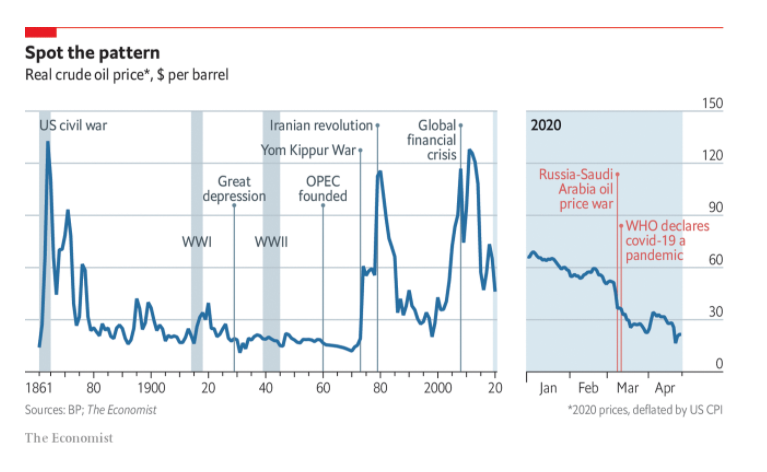
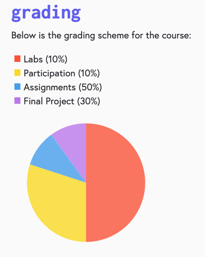

Written Questions
-
Describe how your dashboard answers the questions
presented. You don't have to address every question
directly, but should at a high level address the
main questions. (10 points)
-
I addressed the question of which are the Top 10
Video Games of All Time in in the "Combined Top
10 Video Game Sales of All Time" Bar Chart
(which can also be sorted by Genre, but that is
just a bonus) *note, I chose to aggregate the
data by Name because some video game titles can
be the same put exist on different platforms and
I figured it was best to aggregate sales by the
games themselves.
-
I addressed the question of which Video Game
genre is most popular by region by breaking the
regions into the "Combined Total Sale By Region
(NA, EU, JP, Other)" pie chart which can change
base on the genre using the genre buttons above.
If you hover over the labels, you can also see a
tooltip of the top 5 games in that region for
that genre as well as the total sale by genre
for that region
-
I addressed the question of which publisher has
the best sale by genre in the "Top 10 Publisher
in the [Genre Type] Genres Combined" which
again, can be changed with the genre buttons
-
List 3 reasons why D3 was helpful and improved your
visualization (6 points)
-
Since the charts were so easily configurable
based on different data, I was able to process
the data based on the genre and display the
corresponding chart, allowing one to easily
explore the data by genre and easily visualize
them.
-
The ability to easily add a tooltip also allowed
me to add additional information to the data
-
The ability to customize styling, place titles,
labels, and change them dynamically based on the
data all added to greater readibility of the
data and made visualization better.
-
List 3 reasons why D3 would not be the best tool for
creating a visualization (6 points)
-
If you are unfamiliar with HTML, JavaScript,
CSS, there might be a learning curve with using
D3, especially since you basically have to
create a webpage to display the data.
-
Some of the configurations of D3 seemed overly
complicated, requiring you to configure a bunch
of stuff before the graph can be seen. It seems
like for simple visualizations, processing data
in python and using matplotlib might be an
easier solution.
-
I noticed that the rendering of the graphs are
not really responsive, for example, the eqge of
the bar chart will not shrink if I shrink the
window which might hinder readibility
-
Give two different ways in which graphs may confuse
or mislead viewers. What are ways to avoid this or
fix these issues? (4 points)
-
Omitting the Baseline: If someone were to change
the baseline from 0 to some other number and
subsequently change the scale of the graph, a
graph might look like it is displaying a large
difference between data points when in reality
the difference is slight. To avoid falling into
this trap, always set the baseline to 0 or if
you want to highlight the differences, makes
sure to mention that the graph might not start
at 0 and call attention to the scaling of the
graph.
-
Cherry Picking the Data: If someone were to only
show a shortened range of the data, it might
show some trend contrary to the actual data
trend if the entire data range was shown. Make
sure when you are displaying the data, let
people know when these data points were taken
and display the entire range, not to cherry pick
the data, or if you do, make sure to include the
rest of the data somehow or add a qualifier
stating you are only showing some part of the
data and the reason why
-
Data visualizations can be found everywhere. Find a
real world example of a strong data graphic and
explain what it does well. Next, find a not-as-good
data graphic and explain what it does poorly and how
to improve it. Please include a photo or link of
your examples alongside your answer. Some cool
places to look for visualizations could be on
Fivethirtyeight, the Economist, or perhaps even the
course website! (6 points)
-
This graph of the oil prices throughout the
years in $ per barrel from the Economist is a
good graphic because it shows a nice range of
data dating all the way to 1861 and provides
context of world events to put in context the
time frame of when these oil prices were. There
even is a seperate continuation of the graph for
2020 to highlight the COVID19 crisis. The
numbers for $ of oil also starts from 0 and
provides a clear and sensible range.

-
This graphic of the grading breakdown from the
course website is poor because the stated legend
percentage does not match with the display on
the pie chart. Labs is said to be worth 10% but
based on the colored slice in the corresponding
graph it looks closer to 50%. If the stated
grade percentage match the included pie chart
graphic, it would make a whole lot more sense
